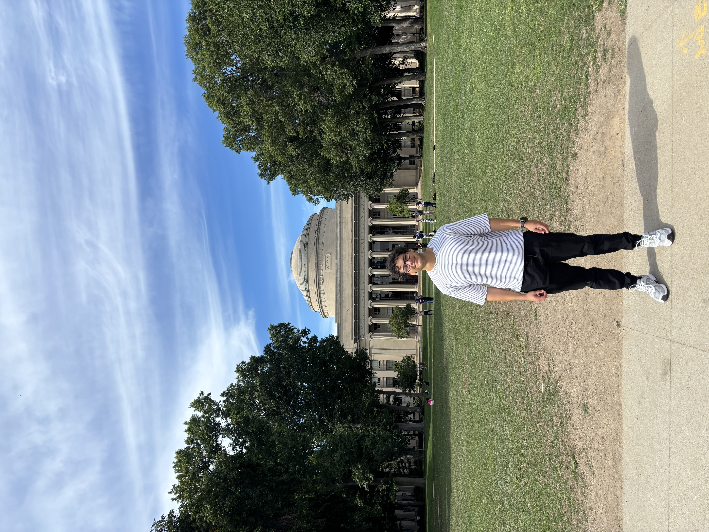
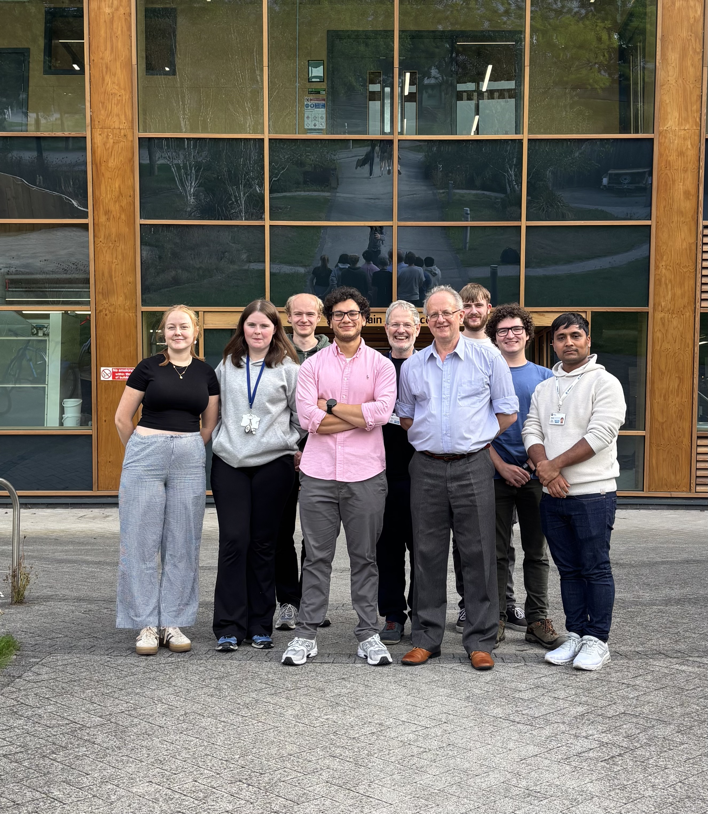

Hello! I'm Eduardo Aguilar-Bejarano, a researcher specialised in data-driven and machine learning solutions to solve fundamental scientific and engineering problems across chemistry and materials sciences. I am very passionate of combining my knowledge in fundamental science disciplines, such as biology and physical-organic chemistry, with AI technologies to solve complex scientific challenges. Tools I am currently using include deep learning and generative models, which I am interested to apply in different (and rather diverse) disciplines, including but not limited to catalyst design and nanomedicine.
My academic journey began at the Universidad de Costa Rica, where I earned my Bachelor's degree in Chemistry with Honors (GPA 9.23/10). I then joined the AI Doctoral Training Centre at the University of Nottingham to pursue my PhD in Chemistry.
My PhD research focused on the use of graph representations for modelling chemical systems such as transition metal complexes for asymmetric catalysis, solid-state materials (specifically interstitial alloys), and soft materials (polymers). I also worked in the development of explainable AI tools for deep learning models, allowing elucidation of structure-property relationships. The thread running through my work is the chemical representation problem — how molecules, materials, and reactions should be encoded for learning. I worked under the supervision of great mentors: Prof. Simon Woodward, Prof. Ender Özcan, and Dr. Grazziela Figueredo.
From June to August 2026 I had the incredible opportunity to work as a visiting researcher in the Anderson Lab at MIT (Koch Institute). This visit really shaped my view of how AI engineers (like myself) should approach a modelling problem to make real-world impact. Ever since, I approach scientific problems with the ultimate goal to create something valuable for the scientific community (and hopefully the humanity too!). In September 2026 I successfully defended my PhD.

After my PhD, I find myself figuring out my next step in my career. I am still interested in doing research and making real-world impact through AI and ML technologies. My current research interests spawn across fundamental sciences problems and technology application problems. For instance, I am interested in the development of more efficient catalysts for challenging transformations and how to design better materials for drug delivery. On top of design questions, I am also excited about reasearch that allows understanding mechanistically why a certain molecule (i.e. catalyst or drug vehicle) is particularly good (or bad) for an application. I strongly belive that data (analysed through AI or ML) can give clues about these mechanisms of action, which can be used further for rational design of new molecules. I am keen into developing and applying technologies that allow speeding-up discovery processes and also the more efficient use of resources, minimising the environmental impact of research.
Outside of research, I enjoy training, specially CrossFit and running! I also enjoy listening and playing music. Feel free to connect on LinkedIn!
University of Nottingham, AI Doctoral Training Centre (EPSRC)
Full 4-year scholarship. Thesis on interpretable GNNs for structure–activity relationship discovery. Supervisors: Prof. Simon Woodward, Prof. Ender Özcan, Dr. Grazziela Figueredo.
Universidad de Costa Rica
GPA: 9.23/10. Graduated with honors in chemistry.
Special courses: advanced topics on organic molecule spectroscopy, bioinorganic chemistry, biochemistry, cancer biology, cheminformatics, organic synthesis.